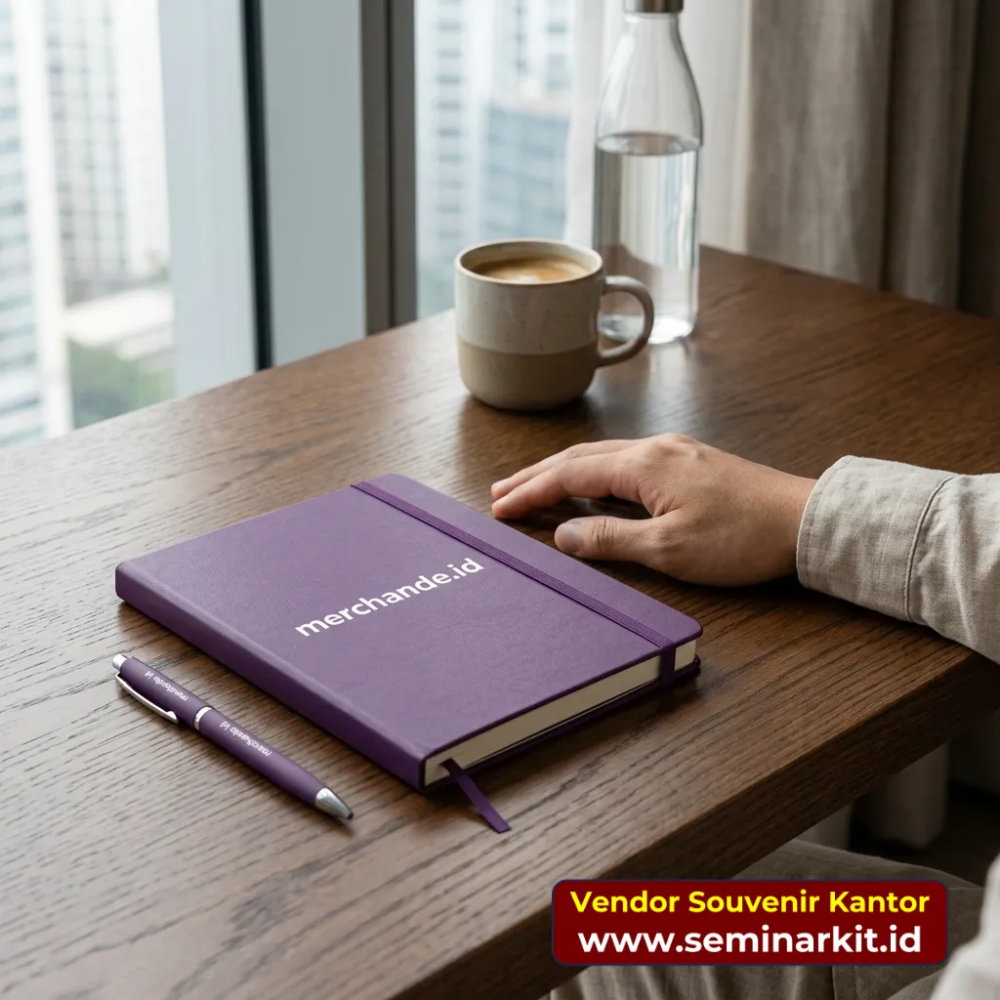
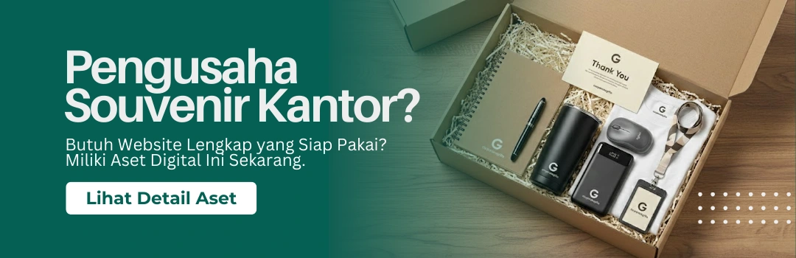

Hari pertama kerja adalah momen yang tidak akan pernah dilupakan oleh karyawan baru. Penelitian di bidang HR secara konsisten menunjukkan bahwa pengalaman onboarding yang positif di minggu pertama secara langsung memengaruhi keputusan karyawan untuk bertahan dalam jangka panjang. Dan salah satu elemen yang paling konkret dan terasa dari proses onboarding adalah: welcome kit.
Onboarding kit atau welcome kit karyawan baru bukan sekadar tas berisi benda-benda random berlabel logo perusahaan. Jika dirancang dengan baik, ia adalah pernyataan budaya perusahaan yang dikemas secara fisik — pesan nyata kepada karyawan baru bahwa perusahaan menyambut mereka dengan serius dan dengan kehangatan.
Artikel ini adalah panduan lengkap untuk tim HR dan purchasing yang ingin merancang onboarding kit yang benar-benar berkesan, fungsional, dan merepresentasikan brand perusahaan dengan tepat — lengkap dengan daftar item, panduan budget, dan tips pengadaan massal.
Mengapa Onboarding Kit Penting?
Sebelum membahas isinya, mari pahami dulu mengapa investasi pada welcome kit itu worth it secara bisnis.
Data yang Perlu Diketahui Tim HR
Berdasarkan berbagai studi tentang employee experience:
- Karyawan yang merasakan onboarding yang baik memiliki kemungkinan 82% lebih tinggi untuk bertahan di perusahaan lebih dari setahun
- Biaya merekrut dan melatih karyawan baru rata-rata setara dengan 6–9 bulan gaji posisi yang digantikan
- Kesan pertama yang positif di minggu pertama berkorelasi kuat dengan produktivitas di bulan pertama
Dengan investasi per-kit yang berkisar antara Rp 150.000 hingga Rp 500.000, onboarding kit adalah salah satu investasi people dengan ROI tertinggi dalam program HR.
Apa yang Dikomunikasikan oleh Welcome Kit?
Setiap elemen dalam welcome kit menyampaikan pesan:
- Kualitas produk → Standar dan nilai perusahaan terhadap kualitas
- Relevansi item → Seberapa dalam perusahaan memahami kebutuhan karyawannya
- Estetika packaging → Perhatian terhadap detail dan rasa bangga pada identitas brand
- Personalisasi → Seberapa personal perusahaan menyambut individu ini
Filosofi Merancang Onboarding Kit yang Efektif
Ada tiga prinsip yang sebaiknya menjadi landasan dalam merancang welcome kit:
Prinsip 1: Fungsional Dulu, Dekoratif Kemudian Item yang benar-benar dipakai setiap hari lebih berharga dari item mahal yang hanya dipajang. Prioritaskan produk yang relevan dengan pekerjaan sehari-hari karyawan.
Prinsip 2: Kualitas Lebih Penting dari Kuantitas Lebih baik 4 item berkualitas baik daripada 10 item murahan. Satu tumbler stainless yang dipakai bertahun-tahun lebih berdampak dari lima pernak-pernik yang tersimpan di laci.
Prinsip 3: Cerminkan Budaya dan Nilai Perusahaan Jika perusahaan Anda mengedepankan sustainability, pilih produk ramah lingkungan. Jika budayanya dinamis dan modern, pilih desain yang segar. Kit ini adalah perpanjangan identitas perusahaan Anda.
Daftar Item Onboarding Kit: Wajib dan Rekomendasi
ITEM WAJIB (Harus Ada di Setiap Kit)
1. ✅ Welcome Letter / Surat Sambutan Personalisasi
Ini adalah item paling murah tapi paling berdampak dalam seluruh kit. Surat yang berisi nama karyawan baru, ditandatangani oleh CEO atau Head of Department, yang menyambut mereka secara personal.
Konten yang efektif dalam welcome letter:
- Sambutan hangat dan ekspresi kegembiraan atas bergabungnya mereka
- Satu paragraf tentang nilai dan misi perusahaan (bukan yang copy-paste dari website)
- Harapan spesifik kepada karyawan baru (bukan yang generik)
- Informasi siapa yang bisa dihubungi di hari pertama
- Tanda tangan (bisa digital, tapi terasa lebih personal jika ada nama yang ditulis tangan)
Format: Dicetak di kertas letter head berkualitas, dilipat rapi di dalam amplop bertuliskan nama karyawan. Jangan dicetak di kertas HVS biasa — ini kesan pertama.
2. ✅ Tumbler atau Botol Minum Branded
Ini adalah item paling fungsional dan paling sering dipakai dalam jangka panjang. Karyawan yang minum dari tumbler berlabel perusahaan setiap hari adalah brand ambassador internal yang paling efektif.
Panduan lengkap memilih tumbler bisa dibaca di: Cara Memilih Tumbler Custom untuk Souvenir Kantor Perusahaan
Untuk onboarding kit, rekomendasi:
- Stainless double wall 500ml sebagai pilihan mid-range yang solid
- Branding dengan laser engraving untuk kesan premium dan ketahanan jangka panjang
- Warna yang sejalan dengan brand guideline perusahaan
3. ✅ Notebook / Buku Catatan Berkualitas
Di minggu-minggu pertama, karyawan baru akan banyak mencatat — nama rekan kerja, alur proses, instruksi penting, password akses sistem. Notebook yang bagus adalah teman terbaik mereka.
Spesifikasi yang disarankan untuk onboarding kit:
- Ukuran A5 (paling praktis — bisa masuk tas, cukup ruang menulis)
- Hard cover dengan logo perusahaan dan nama karyawan (jika ada budget personalisasi)
- Minimal 100 lembar isi, kertas 80 gram
- Gunakan jenis binding yang nyaman — spiral untuk fleksibilitas, perfect binding untuk estetika
Nilai tambah: Cetak informasi perusahaan yang berguna di halaman pertama — misalnya: nomor darurat, link resources internal, atau kalender cuti perusahaan tahun ini.
4. ✅ Pulpen Berkualitas
Sepasangkan dengan notebook. Jangan kirim notebook bagus dengan pulpen murahan — ini seperti menyajikan makanan enak di piring rusak.
Pilih pulpen yang:
- Menulis dengan lancar sejak detik pertama (uji ini sebelum order massal)
- Memiliki berat yang nyaman di tangan (tidak terlalu ringan)
- Bisa dibranding dengan logo perusahaan (sablon atau laser)
- Memiliki cadangan tinta yang cukup (bukan yang habis dalam 2 minggu)
5. ✅ ID Card / Name Tag Set
Selain fungsi operasional (akses gedung, identifikasi), ID card adalah bukti fisik pertama bahwa karyawan baru sudah "resmi" menjadi bagian dari tim. Momen menerima ID card pertama adalah momen simbolis yang penting.
Komponen:
- Kartu ID yang sudah tercetak (nama, jabatan, foto, nomor ID karyawan)
- Card holder / tempat ID berkualitas baik (bukan yang tipis dan mudah retak)
- Lanyard dengan nama perusahaan atau logo (atau warna brand)
ITEM REKOMENDASI (Tingkatkan Kualitas Kit Secara Signifikan)
6. 🎒 Totebag atau Tas Branded
Wadah dari seluruh kit sekaligus item yang akan terus dipakai oleh karyawan. Tote bag canvas atau tas yang lebih premium (sling bag, backpack) memberikan nilai pakai jauh melampaui onboarding.
Pilih berdasarkan profil karyawan:
- Staff kantor umum: Tote bag canvas branded cukup
- Sales / tim lapangan: Sling bag atau backpack lebih fungsional
- Eksekutif dan manajer: Document bag atau tas kulit minimalis
7. 🖥️ Aksesoris Meja / Desk Set
Item yang akan ada di meja kerja karyawan setiap hari — menjadi pengingat konstan akan momen memulai perjalanan mereka di perusahaan ini.
Opsi populer:
- Mouse pad branded (ukuran besar, berbahan tebal, bertahan bertahun-tahun)
- Sticky notes branded (fungsional dan sering terlihat)
- Pen holder atau desk organizer kecil
- Cable organizer (sangat relevan di era remote work dengan banyak kabel)
8. 📱 Charging Cable atau Power Bank
Untuk karyawan yang menggunakan banyak perangkat, ini adalah item yang sangat diapresiasi. Power bank branded dengan kapasitas wajar (5.000–10.000 mAh) adalah pilihan premium yang jarang gagal menyenangkan penerimanya.
Catatan: Pastikan kabel yang diberikan sesuai dengan port perangkat yang umumnya digunakan (USB-C untuk perangkat modern, atau sediakan multi-port cable).
9. 🍵 Snack atau Welcome Treat
Sentuhan personal yang sering diremehkan tapi selalu disukai. Bisa berupa:
- Cokelat atau kue premium
- Teh atau kopi specialty
- Snack artisan pilihan
Ini membuat unboxing kit terasa lebih "hangat" dan manusiawi — bukan sekadar transaksi formal.
10. 📖 Buku atau Bacaan yang Relevan
Untuk perusahaan yang mengedepankan budaya belajar dan pertumbuhan (growth culture), menyertakan satu buku yang relevan dengan nilai perusahaan atau bidang pekerjaan adalah pernyataan kuat. Bisa berupa buku terlaris di bidang bisnis, kepemimpinan, atau bahkan komik ilustrasi tentang budaya perusahaan.
11. 📋 Employee Guidebook / Panduan Karyawan
Buku panduan yang berisi informasi penting yang dibutuhkan karyawan baru: kebijakan perusahaan, benefit, prosedur cuti, kontak penting, panduan penggunaan sistem internal, dan informasi lain yang biasanya tersebar di berbagai dokumen.
Memiliki informasi ini dalam satu buku fisik yang terdesain dengan baik adalah nilai tambah besar — jauh lebih mudah diakses daripada email yang terbenam di inbox.
Menyesuaikan Kit dengan Tier Jabatan
Tidak semua karyawan baru perlu menerima kit yang identik. Banyak perusahaan menggunakan sistem tier berdasarkan level jabatan:
Tier 1: Staff dan Karyawan Umum
Budget per kit: Rp 150.000 – Rp 300.000
Isi: Welcome letter + Tumbler plastik premium + Notebook A5 + Pulpen + ID card set + Tote bag spunbond atau canvas
Tier 2: Supervisor dan Officer
Budget per kit: Rp 300.000 – Rp 500.000
Isi: Welcome letter personalisasi + Tumbler stainless double wall + Notebook hard cover A5 + Pulpen premium + ID card set + Tote bag canvas + Mouse pad + Sticky notes
Tier 3: Manager ke Atas
Budget per kit: Rp 500.000 – Rp 1.000.000
Isi: Welcome letter dari CEO + Tumbler stainless premium (laser engraved nama) + Notebook premium hard cover (nama tercetak) + Pulpen metal laser + ID card set premium + Document bag kulit atau tas eksklusif + Employee guidebook + Desk organizer + Snack premium
Tips Pengadaan Onboarding Kit dalam Jumlah Besar
Untuk perusahaan yang rutin merekrut dalam jumlah banyak (ratusan karyawan per tahun), pengadaan kit secara berkala lebih efisien daripada per-individu:
Sistem Stok Kit Ready-Made
Kerja sama dengan vendor souvenir kantor untuk memproduksi kit dalam batch — misalnya 100 atau 200 kit sekaligus — yang disimpan sebagai stok. Saat ada karyawan baru, tinggal tambahkan welcome letter personalisasi dan ID card yang dicetak sesuai nama.
Keuntungan: Harga lebih murah per unit, tidak ada keterlambatan kit saat ada joiner mendadak
Yang perlu diperhatikan: Pastikan item non-perishable (hindari snack sebagai item stok tetap), dan update desain minimal setahun sekali agar kit tidak terkesan usang.
Koordinasi dengan Vendor yang Berpengalaman
Vendor souvenir kantor yang berpengalaman dengan onboarding kit perusahaan akan:
- Membantu merancang komposisi item yang optimal untuk budget Anda
- Menyediakan sistem replenishment stok yang mudah
- Memiliki kapabilitas personalisasi nama (cetak nama per kit) jika dibutuhkan
- Mendukung pengiriman langsung ke alamat karyawan (untuk karyawan remote atau di luar kota)
Packaging: Jangan Abaikan Momen Unboxing
Cara kit dikemas sama pentingnya dengan isinya. Pengalaman unboxing yang baik menciptakan momen emosional yang akan diceritakan karyawan baru kepada teman dan keluarganya.
Tips packaging yang efektif:
- Gunakan box atau tas yang tertutup rapi — bukan plastik transparan yang terlihat seperti paket belanjaan
- Susun item secara estetis di dalam box, bukan tumpukan asal
- Sertakan tissue atau shredded paper untuk pengisi yang memberikan kesan premium
- Tempelkan stiker seal dengan logo perusahaan di luar kemasan
- Pastikan packaging cukup kokoh untuk pengiriman jika kit dikirim ke alamat karyawan

Checklist Final Sebelum Order Onboarding Kit
- Daftar item kit sudah difinalisasi sesuai tier jabatan
- Jumlah kit per batch sudah ditentukan (termasuk buffer stok)
- File logo dan guideline branding sudah disiapkan
- Spesifikasi teknis setiap item sudah jelas (ukuran, warna, material, metode branding)
- Sample kit fisik sudah disetujui oleh HR dan manajemen
- Format welcome letter sudah dirancang
- Sistem distribusi kit ke karyawan baru sudah jelas (dikirim ke rumah atau diserahkan di hari pertama?)
- Vendor dipilih berdasarkan kemampuan replenishment, bukan hanya harga
- Budget per tier sudah disetujui finance

Banner promosi: klik gambar untuk langsung terhubung ke WhatsApp tim sales.
Kesimpulan
Onboarding kit karyawan baru adalah investasi HR yang sering underestimated tapi memiliki dampak nyata terhadap employee engagement dan retention. Kit yang dirancang dengan baik — fungsional, berkualitas, personal, dan merepresentasikan budaya perusahaan — menciptakan kesan pertama yang sulit dilupakan dan meletakkan fondasi yang kuat untuk hubungan jangka panjang antara karyawan dan perusahaan.
Mulailah dengan menentukan prinsip dan budget per tier, pilih item yang benar-benar dipakai sehari-hari, dan percayakan produksi serta distribusinya kepada vendor yang berpengalaman.
Baca juga artikel terkait:
- 🎁 Perbedaan Merchandise, Corporate Gift, dan Hampers — Kapan Menggunakan Masing-masing?
- 📦 Panduan Hampers Perusahaan: Produk, Budget, dan Tips Distribusi Massal
- 🎒 Checklist Seminar Kit yang Wajib Ada untuk Event Korporat
- 🥤 Cara Memilih Tumbler Custom untuk Souvenir Kantor Perusahaan
Butuh bantuan merancang dan mengadakan onboarding kit karyawan untuk perusahaan Anda? Vendor Souvenir Kantor siap membantu dari konsultasi komposisi produk, custom branding, packing, hingga distribusi ke seluruh Indonesia termasuk langsung ke alamat karyawan remote. Hubungi kami di vendorsouvenirkantor.web.id atau WhatsApp 0895-6390-68080.
FAQ Seputar Topik Ini
Apa saja item wajib onboarding kit karyawan baru?
Item dasar yang paling penting biasanya welcome letter, tumbler, notebook, pulpen, dan ID card set dengan kualitas yang layak dipakai harian.
Perlukah onboarding kit dibedakan per level jabatan?
Perlu bila perusahaan ingin menyesuaikan nilai paket dan konteks peran, misalnya tier staff, supervisor, dan manajer.
Bagaimana cara membuat onboarding kit tetap efisien saat rekrutmen massal?
Gunakan sistem batch stock ready-made untuk item umum, lalu personalisasi di tahap akhir pada welcome letter dan identitas penerima.
Apakah onboarding kit berdampak pada retensi karyawan?
Ya, pengalaman onboarding yang positif di fase awal berkontribusi pada engagement dan kecenderungan karyawan bertahan lebih lama.